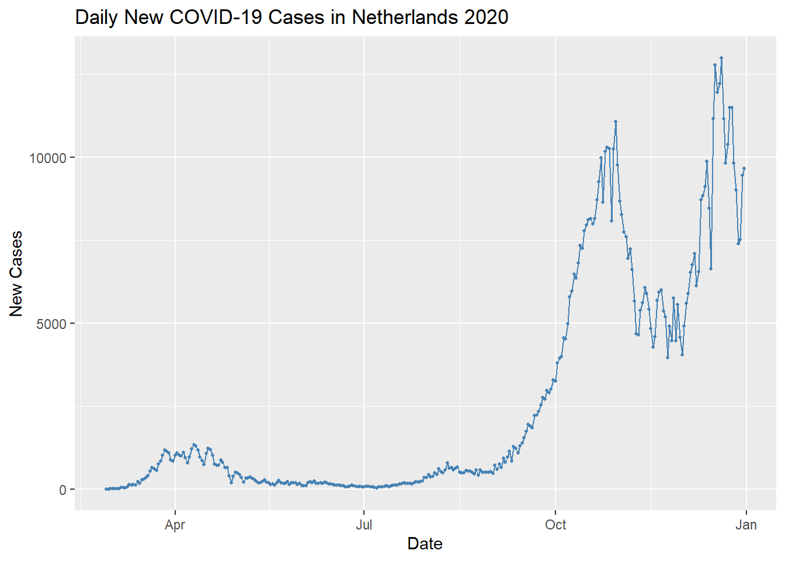
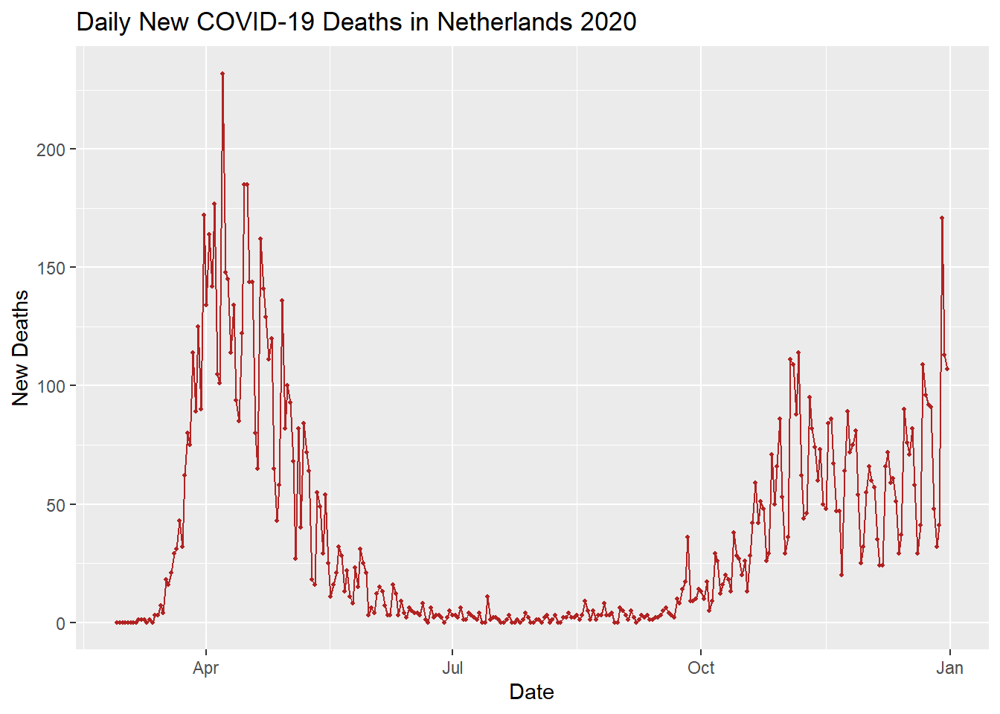

10 Optimising contamination control strategies in the cleanrooms of the Prinses Maxima Center
Environmental monitoring is an essential part of maintaining microbiological quality control in pharmaceutical and biotechnological manufacturing:contentReferenceoaicite:4. Cleanroom studies have shown that the typical microflora found in such controlled environments originate primarily from human skin (Gram-positive cocci), with smaller contributions from environmental organisms (Gram-positive rods) and waterborne bacteria (Gram-negative rods):contentReferenceoaicite:5. Tracking these flora over time is important – shifts in the types or numbers of microbes may signal deviations from normal conditions, such as the emergence of resistant strains or issues with cleaning procedures(Sandle 2011). For instance, a five-year survey of a cell therapy production facility found that 97.8% of the isolates were Gram-positive bacteria (mostly Staphylococcus species), and no fungi were detected, indicating that personnel were the main source of contamination(Morandi et al. 2024). This underscores that human operators can be significant contributors to cleanroom contamination, and rigorous personnel hygiene and monitoring are critical.
Another challenge in contamination control is determining optimal conditions for detecting a broad range of microorganisms in environmental samples. Guidelines from different authorities vary in recommended incubation times, temperatures, and media for environmental monitoring plates, and no single consensus strategy exists(Gordon et al. 2014). Studies have demonstrated that incubation at 30–35 °C on general media is ideal for recovering bacteria, whereas fungi (molds) are best recovered at cooler temperatures (20–25 °C on specialized fungal media)(Gordon et al. 2014). Using only a high-temperature incubation can severely undercount molds, even if plates are subsequently moved to a lower temperature, so an optimized two-temperature or sequential incubation strategy may be necessary to recover both bacteria and fungi effectively.
In addition to environmental microbes, Mycoplasma contamination is a serious risk in cell culture and advanced therapy products. Mycoplasmas are common yet insidious contaminants that lack cell walls, making them difficult to detect and eliminate(Sandle 2022). They can alter cell physiology and growth characteristics, potentially compromising experimental results or the safety of cell therapy products. It is therefore vital to include specific screening for mycoplasma in any contamination control strategy. Modern detection methods such as polymerase chain reaction (PCR) assays have proven to be far more sensitive and rapid for mycoplasma detection than traditional culture or biochemical tests(Molla Kazemiha et al. 2014). For example, in one comparison study PCR could detect mycoplasma in ~57.5% of contaminated cell line samples, whereas an enzyme-based method detected 52.5% and culture only 40% – underscoring PCR’s superior sensitivity(Molla Kazemiha et al. 2014). Rapid methods like the MycoAlert™ enzymatic kit also outperform classic culture in speed (providing results within 20 minutes) and can serve as a convenient screening tool(Molla Kazemiha et al. 2014).
In summary, optimizing contamination control strategies requires a multifaceted approach supported by data from the literature. This includes robust environmental monitoring (with appropriate incubation conditions to capture bacteria and fungi), routine trending of cleanroom flora to detect changes(Sandle 2011), strict personnel controls (since humans are a primary contamination source)(Morandi et al. 2024), and sensitive detection methods for hard-to-find contaminants like mycoplasmas[Sandle (2022)](Molla Kazemiha et al. 2014). By integrating these evidence-based practices, one can better ensure the quality and safety of products in a high-grade cleanroom or cell culture environment.
10.1 COVID-19 Trend in Netherlands (2020)
This report presents the daily number of newly reported COVID-19 cases and deaths in Netherlands for the year 2020, focusing on the months: 1, 2, 3, 4, 5, 6, 7, 8, 9, 10, 11, 12. The data is sourced from the European Centre for Disease Prevention and Control (ECDC) and includes all EU/EEA countries’ daily case counts and fatalities.
Summary of Selection: For Netherlands, there were a total of 795538 reported cases and 11403 deaths in the selected period (2020, months 1, 2, 3, 4, 5, 6, 7, 8, 9, 10, 11, 12). The daily trends are shown in the graphs below.


Figure: Daily reported COVID-19 cases (top) and deaths (bottom) in Netherlands for 2020 (months 1, 2, 3, 4, 5, 6, 7, 8, 9, 10, 11, 12). Each point represents the report for a single day. These trends illustrate the progression of the pandemic over the selected timeframe.